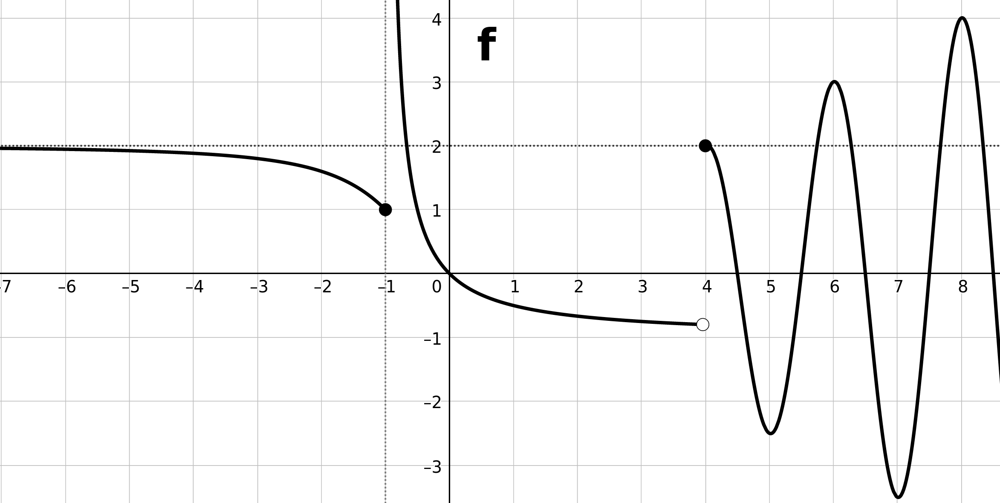
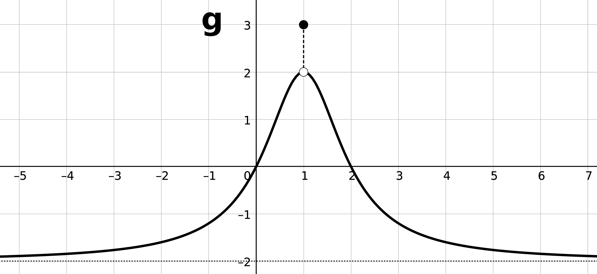

1. Límites y continuidad
1.1. Ejemplo

- \(\displaystyle\lim_{ {x} \rightarrow {-\infty} } {f}\)
- \(\displaystyle\lim_{ {x} \rightarrow {-3} } {f}\)
- \(\displaystyle\lim_{ {x} \rightarrow {-2^-} } {f}\)
- \(\displaystyle\lim_{ {x} \rightarrow {-2^+} } {f}\)
- \(\displaystyle\lim_{ {x} \rightarrow {-2} } {f}\)
- \(\displaystyle\lim_{ {x} \rightarrow {0} } {f}\)
- \(\displaystyle\lim_{ {x} \rightarrow {\infty} } {f}\)
1.2. Ejemplo
Dibuja la gráfica de una función \(f\) tal que:
\[\begin{array}{|l|l|} \hline \text{dom }f=\mathbb{R}-(-2,2)&\displaystyle\lim_{ {x} \rightarrow {-4} } {f}=-3 \\ \hline f(-2)=f(2)=0 & \displaystyle\lim_{ {x} \rightarrow {-\infty} } {f}=\infty \\ \hline f(-4)=-2 & \displaystyle\lim_{ {x} \rightarrow {\infty} } {f}=-2 \\ \hline\end{array}\]
Tareas
- Estudiar:
- Concepto de límite finito o infinito (en un punto, laterales, en el infinito).
- Teorema de existencia del límite.
- Encuentra un ejemplo de que cada uno de los tipos de límite (finito en un punto, infinito en un punto, no exitente en un punto, lateral finito, lateral infinito,…).
- Ejercicios: 1.3 - 1.15
1.3. Ejercicio

- \(\displaystyle\lim_{ {x} \rightarrow {-\infty} } {f}\)
- \(\displaystyle\lim_{ {x} \rightarrow {-2} } {f}\)
- \(\displaystyle\lim_{ {x} \rightarrow {-1} } {f}\)
- \(\displaystyle\lim_{ {x} \rightarrow {0} } {f}\)
- \(\displaystyle\lim_{ {x} \rightarrow {1} } {f}\)
- \(\displaystyle\lim_{ {x} \rightarrow {\infty} } {f}\)
1.4. Ejercicio

- \(\displaystyle\lim_{ {x} \rightarrow {-\infty} } {g}\)
- \(\displaystyle\lim_{ {x} \rightarrow {-3} } {g}\)
- \(\displaystyle\lim_{ {x} \rightarrow {-1} } {g}\)
- \(\displaystyle\lim_{ {x} \rightarrow {0} } {g}\)
- \(\displaystyle\lim_{ {x} \rightarrow {1} } {g}\)
- \(\displaystyle\lim_{ {x} \rightarrow {2} } {g}\)
- \(\displaystyle\lim_{ {x} \rightarrow {\infty} } {g}\)
1.5. Ejercicio

1.6. Ejercicio

1.7. Ejercicio

1.8. Ejercicio

1.9. Ejercicio
Dibuja la gráfica de una función \(f\) tal que:
\[\begin{array}{|l|l|l|} \hline \text{dom }h=\mathbb{R}-\{-2,2\}&h(-3)=1&\displaystyle\lim_{ {x} \rightarrow {2^-} } {h}=-\infty\\ \hline \displaystyle\lim_{ {x} \rightarrow {-\infty} } {h}=-\infty&\displaystyle\lim_{ {x} \rightarrow {-2^-} } {h}=-\infty&\displaystyle\lim_{ {x} \rightarrow {2^+} } {h}=\infty\\ \hline \displaystyle\lim_{ {x} \rightarrow {-3} } {h}=-2&\displaystyle\lim_{ {x} \rightarrow {-2^+} } {h}=\infty&\displaystyle\lim_{ {x} \rightarrow {\infty} } {h}=\infty\\ \hline\end{array}\]
1.10. Ejercicio
Dibuja la gráfica de una función \(f\) tal que:

1.11. Ejercicio
Dibuja la gráfica de una función \(f\) tal que:

1.12. Ejercicio
Dibuja la gráfica de una función \(f\) tal que:

1.13. Ejercicio
Dibuja la gráfica de una función \(f\) tal que:

1.14. Ejercicio
Dibuja la gráfica de una función \(f\) tal que:

1.15. Ejercicio
Dibuja la gráfica de una función \(f\) tal que:

1.16. Ejemplo
Sea \(f\) una función de la que se sabe que:
- \(\text{dom} f =\mathbb{R}\);
- \(f(1)=0\);
- \(\displaystyle\lim_{ {x} \rightarrow {1^-} } {f} = \infty\); \(\displaystyle\lim_{ {x} \rightarrow {1^+} } {f}=-\infty\); y,
- \(\displaystyle\lim_{ {x} \rightarrow {-\infty} } {f}=\displaystyle\lim_{ {x} \rightarrow {\infty} } {f}=2\).
- Determine razonadamente o discuta la inexistencia del límite siguiente: \(\displaystyle\lim_{ {x} \rightarrow {1} } {f^2}\).
- Calcule \(\displaystyle\lim_{ {x} \rightarrow {1} } {(f \circ f)}\) (sugerencia: calcule primero los límites laterales).
Tareas
- Estudiar: límites de funciones elementales en su dominio.
- Estudiar: límites de operaciones (\(+\), \(\cdot\), \(/\), \(\circ\)).
- Estudiar: límites de funciones a trozos
- Ejercicios: 1.17, 1.18.
1.17. Ejercicio


- \(\displaystyle\lim_{ {x} \rightarrow {-1} } {f}\), \(\displaystyle\lim_{ {x} \rightarrow {4} } {f}\) y \(\displaystyle\lim_{ {x} \rightarrow {1} } {g}\)
- \(\displaystyle\lim_{ {x} \rightarrow {-\infty} } {(f+g)}\)
- \(\displaystyle\lim_{ {x} \rightarrow {-1^-} } {(g \circ f)}\)
Ejemplo
- \(\displaystyle\lim_{ {x} \rightarrow {-\infty} } {\left( x^3+10x^2+1 \right)}\)
- \(\displaystyle\lim_{ {x} \rightarrow {\pi^-} } {\ln \left(\sin x\right)}\)
- \(\displaystyle\lim_{ {x} \rightarrow {\infty} } {\left( \dfrac{1}{2} \right)^{x^2-x}}\)
- \(\displaystyle\lim_{ {x} \rightarrow {0^-} } {\dfrac{1}{1-e^{1/x}}}\)
- \(\displaystyle\lim_{ {x} \rightarrow {0^+} } {\dfrac{1}{1-e^{1/x}}}\)
- \(\displaystyle\lim_{ {x} \rightarrow {0^+} } {\dfrac{1}{1-e^{1/x}}}\)
1.18. Ejercicio
- \(\displaystyle\lim_{ {x} \rightarrow {1^+} } {\sqrt{\dfrac{x-1}{x+2}}}\)
- \(\displaystyle\lim_{ {x} \rightarrow {1^-} } {\sqrt{\dfrac{x-1}{x+2}}}\)
- \(\displaystyle\lim_{ {x} \rightarrow {2^+} } {\ln\left(\dfrac{x}{-2+x}\right)}\)
- \(\displaystyle\lim_{ {x} \rightarrow {2} } {\ln^2(x-2)}\)
- \(\displaystyle\lim_{ {x} \rightarrow {\infty} } {\dfrac{1}{\dfrac{\pi}{2}-\text{atan } x}}\)
1.19. Ejercicio
- \(\displaystyle\lim_{ {x} \rightarrow {\infty} } {\left( x^5-3x^2+1 \right)}\)
- \(\displaystyle\lim_{ {x} \rightarrow {\pi^-} } {\dfrac{1}{x\sin x}}\)
- \(\displaystyle\lim_{ {x} \rightarrow {\infty} } {\left( \dfrac{1}{2} \right)^{x^2-x}}\)
- \(\displaystyle\lim_{ {x} \rightarrow {0^-} } {\dfrac{1}{1-e^{1/x}}}\)
- \(\displaystyle\lim_{ {x} \rightarrow {0^+} } {\dfrac{1}{1-e^{1/x}}}\)
1.20. Ejemplo
\(\displaystyle\lim_{ {x} \rightarrow {1} } {5^{\frac{1}{x-1}}}\)
1.21. Ejemplo
- \(\displaystyle\lim_{ {x} \rightarrow {1} } {\dfrac{x^4-1}{x^3-1}}\)
- \(\displaystyle\lim_{ {x} \rightarrow {1} } {\dfrac{\dfrac{1}{x}-1}{x-1}}\)
1.22. Ejemplo
\(\displaystyle\lim_{ {x} \rightarrow {4} } {\dfrac{3-\sqrt{5+x}}{1-\sqrt{5-x}}}\)
1.23. Ejemplo
- \(\displaystyle\lim_{ {x} \rightarrow {\infty} } {\sqrt{ \dfrac{x^4-1}{x^3-1} }}\)
- \(\displaystyle\lim_{ {x} \rightarrow {\infty} } {\dfrac{1-x}{\sqrt{x^2-1}}}\)
1.24. Ejemplo
\(\displaystyle\lim_{ {x} \rightarrow {-\infty} } {\sqrt{x^2+3}+x}\)
1.25. Ejemplo
\(\displaystyle\lim_{ {x} \rightarrow {\infty} } {\left( \dfrac{x^2}{x-1} - \dfrac{x^2}{x+1} \right)}\)
1.26. Ejemplo
\(\displaystyle\lim_{ {x} \rightarrow {0} } {\left(\dfrac{1+x^2}{1-x^2}\right)^{\dfrac{1+3x^2}{x^2}}}\)